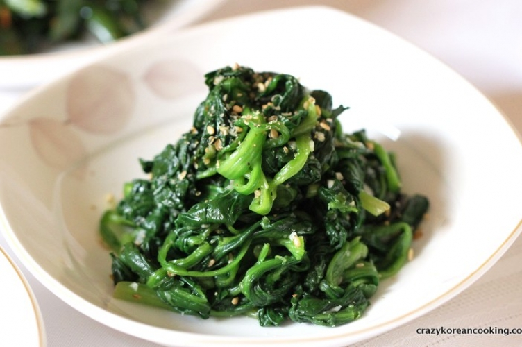

Simply Seasoned Korean Spinach Salad

Description
Sigeumchi-namul is a Korean side dish (banchan) made of blanched spinach seasoned with soy sauce, garlic, and toasted sesame oil.
The spinach is only slightly cooked, leaving it a little crispy, but still soft and tasty.
Ingredients
- 250 g English spinach or baby spinach
- 1 tsp fine sea salt , to add to the water
- 6 cups water to boil
- 1 tsp green onion , finely chopped
- 1/2 tsp minced garlic
- 1/4 tsp fine sea salt or to taste
- 1 tsp toasted sesame seeds
- 1 Tbsp sesame oil
Steps
- Trim the spinach roots (if any) and wash the spinach in cold water thoroughly.
- Boil the water in a pot/sauce pan for 5 to 7 mins. Add the salt (1 tsp). Once the water starts to boil, plunge the spinach into the pot and leave it for 30 seconds.
- Drain the boiled water away and run cold water on the spinach for 1-2 minutes.
- Squeeze the spinach to remove excess water.
- Cut the spinach into 2-3 pieces with a knife. (If you are using baby spinach, you can skip this step.)
- Add the seasoning sauce and mix well with your hands.
- Serve it on a plate and enjoy.